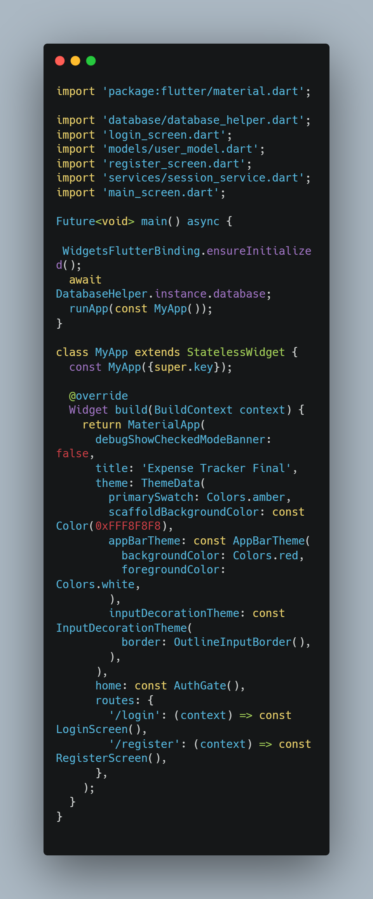
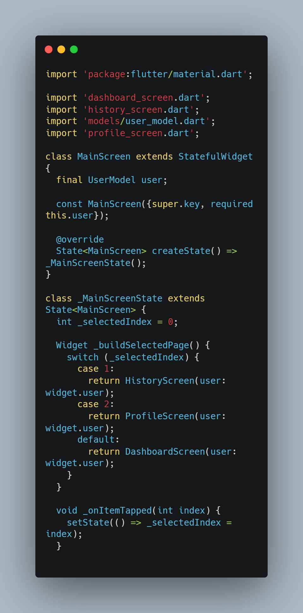
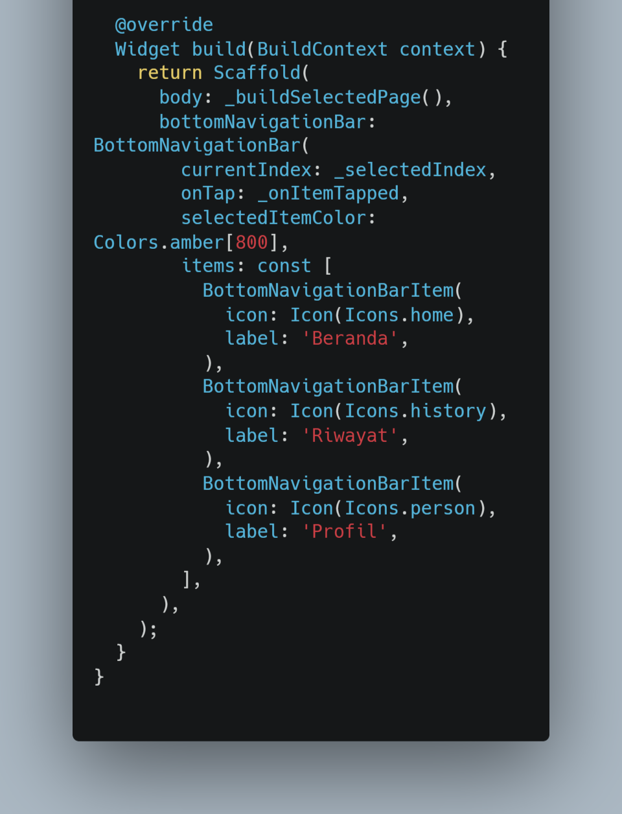
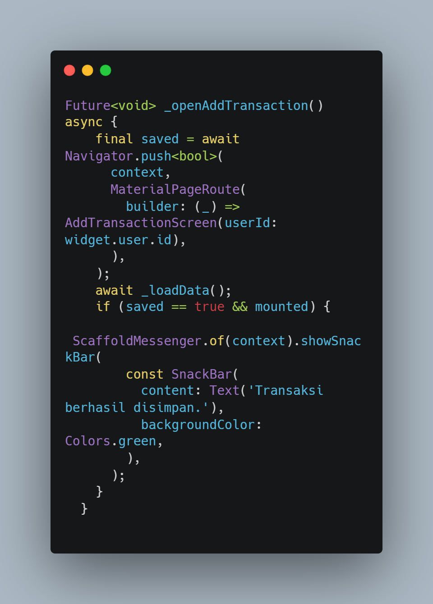
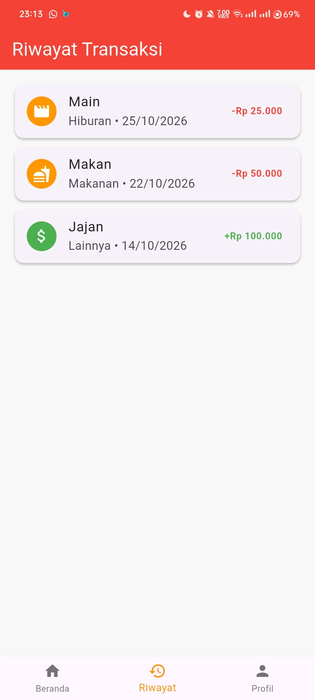
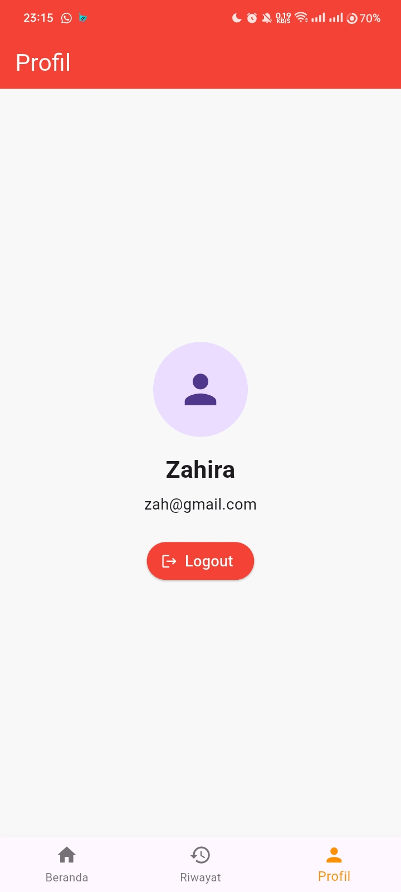
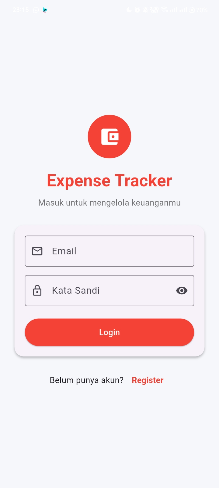
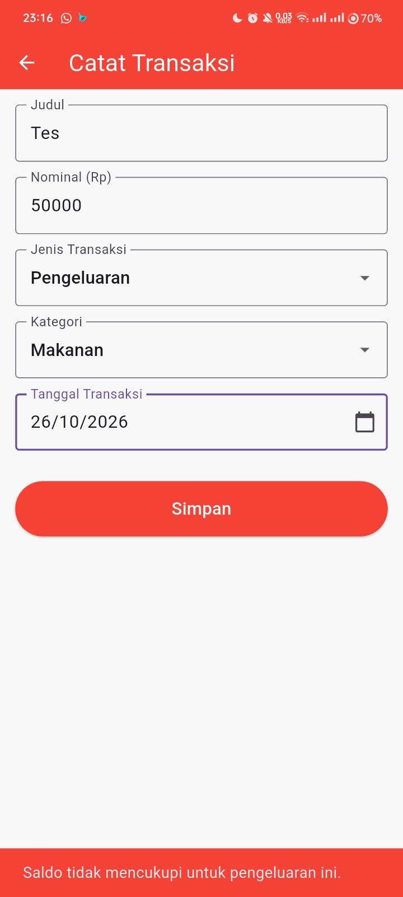
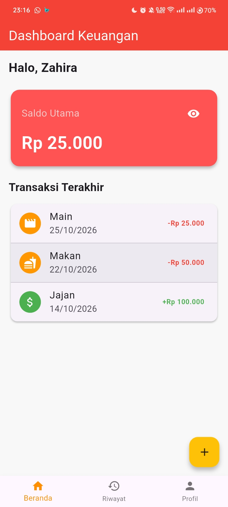

Laporan Praktikum 5
Aplikasi Mobile - Flutter
Praktikum 5 membahas Arsitektur Navigasi pada Flutter menggunakan Named Routes dan BottomNavigationBar. Named Routes digunakan untuk mendaftarkan rute halaman pada MaterialApp, sedangkan BottomNavigationBar digunakan untuk berpindah antara halaman Beranda, Riwayat, dan Profil. Pada pengembangan aplikasi final, fitur ini digabungkan dengan autentikasi pengguna, penyimpanan transaksi, serta validasi agar pengeluaran tidak melebihi saldo yang tersedia.
Tujuan Praktikum
Named Routes
- Menerapkan navigasi terpusat melalui properti routes pada MaterialApp.
- Mengatur halaman awal menggunakan initialRoute.
- Membuka halaman tambah transaksi menggunakan Navigator.pushNamed.
Bottom Navigation Bar
- Membuat penampung halaman menggunakan MainScreen berbasis StatefulWidget.
- Mengatur tab aktif menggunakan _selectedIndex dan setState.
- Mengintegrasikan halaman Beranda, Riwayat, dan Profil.
Alat dan Bahan
- Flutter SDK
- Code Editor: Visual Studio Code atau Android Studio
- Emulator atau perangkat Android
- Proyek Expense Tracker dari praktikum sebelumnya
Langkah-Langkah Praktikum
Buka file main.dart. Sesuai modul, pemanggilan halaman melalui properti home diganti dengan initialRoute dan routes. Rute '/' diarahkan ke MainScreen, sedangkan rute '/add' diarahkan ke halaman AddTransactionScreen. Dengan demikian, alamat navigasi halaman didefinisikan pada satu tempat.

Gambar 1. Pendaftaran initialRoute dan routes pada main.dart
Buat file main_screen.dart dan jadikan MainScreen sebagai StatefulWidget. Siapkan variabel _selectedIndex untuk menyimpan indeks tab aktif dan sebuah daftar widget yang berisi halaman Dashboard, Riwayat, serta Profil. Nilai indeks awal adalah 0 sehingga halaman pertama yang ditampilkan adalah Beranda.

Gambar 2. MainScreen, _selectedIndex, dan daftar halaman
Lengkapi method build pada MainScreen dengan BottomNavigationBar. Properti currentIndex mengikuti nilai _selectedIndex, sedangkan onTap memanggil method yang memperbarui indeks melalui setState. Tambahkan tiga item navigasi dengan ikon dan label Beranda, Riwayat, dan Profil.

Gambar 3. Implementasi BottomNavigationBar dengan tiga menu
Pada file dashboard_screen.dart, ubah aksi tombol tambah transaksi agar menggunakan Navigator.pushNamed(context, '/add'). Rute tersebut harus sudah terdaftar pada main.dart. Perubahan ini mengikuti modul yang mengganti navigasi langsung dengan navigasi berdasarkan nama rute.

Gambar 4. Tombol tambah transaksi membuka rute /add
Buat halaman Riwayat Transaksi untuk menampilkan transaksi yang telah dicatat. Hubungkan halaman tersebut ke daftar halaman pada MainScreen agar dapat dibuka melalui menu Riwayat di bagian bawah layar.

Gambar 5. Halaman Riwayat Transaksi pada aplikasi
Buat halaman Profil yang berisi avatar, nama, email, dan tombol Logout sesuai tugas modul. Masukkan halaman Profil ke daftar halaman MainScreen sehingga pengguna dapat membukanya melalui menu Profil.

Gambar 6. Halaman Profil yang memuat informasi pengguna dan tombol Logout
Buat halaman Login dengan input email dan password serta tombol Login. Ketika tombol ditekan, aplikasi memproses input dan membuka halaman utama sesuai alur autentikasi yang diterapkan. Modul meminta informasi email yang dimasukkan pengguna ditampilkan pada halaman utama.

Gambar 7. Halaman Login dengan input email dan password
Pengembangan Tambahan pada Aplikasi Final
Aplikasi final menggabungkan halaman autentikasi dengan fitur Expense Tracker. Data akun dan transaksi dikelola melalui penyimpanan lokal SQLite menggunakan database helper, sehingga data transaksi dapat dipisahkan berdasarkan pengguna yang sedang masuk.

Gambar 8. Alur autentikasi pengguna pada aplikasi final
Sebagai tambahan pada aplikasi final, sebelum menyimpan transaksi bertipe pengeluaran, aplikasi memeriksa saldo pengguna. Jika nominal pengeluaran lebih besar daripada saldo saat ini, transaksi tidak disimpan dan aplikasi menampilkan pesan bahwa saldo tidak mencukupi. Validasi ini membantu mencegah saldo menjadi negatif melalui form tambah transaksi.

Gambar 9. Pesan saldo tidak mencukupi ketika pengeluaran melebihi saldo
Jalankan aplikasi dan uji alur utama: masuk ke akun, melihat saldo, berpindah antara Beranda, Riwayat, dan Profil, menambahkan pemasukan atau pengeluaran, membuka detail transaksi jika tersedia, serta mencoba pengeluaran yang melebihi saldo. Pastikan tab navigasi berpindah sesuai pilihan dan data yang ditampilkan sesuai dengan pengguna yang masuk.

Gambar 10. Hasil akhir aplikasi Expense Tracker dengan navigasi bawah
Kesimpulan
Praktikum 5 memberikan pemahaman tentang pengaturan navigasi aplikasi Flutter menggunakan Named Routes dan BottomNavigationBar. Properti routes dan initialRoute mengatur rute yang tersedia serta halaman awal, sementara currentIndex, onTap, dan setState digunakan untuk mengatur perpindahan tab. Penerapan tugas modul melengkapi aplikasi dengan halaman Riwayat, Profil, dan Login. Pengembangan final kemudian menyatukan navigasi dengan fitur pencatatan transaksi serta validasi saldo pengeluaran.
Repository GitHub
Source code praktikum dapat dilihat melalui repository berikut.
Lihat Repository GitHub